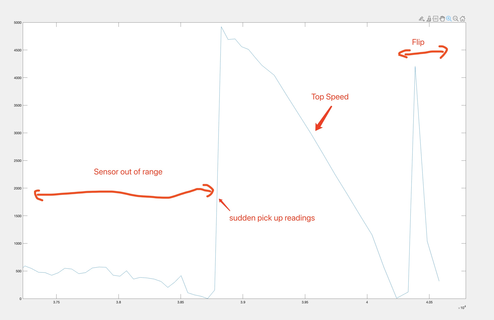

Lab 4 Report In this lab, I partnered with Tongqing Zhang (tz422) and Yingjie Zhao (yz483). And we did measure the speed of the car with TOF sensor. (A) Dimensions of the car Using a ruler, I measured the car is 18cm long, 14.4cm wide, and 7.9cm high. This measurement can be useful in the futuer to calculate the center of mass, and see if car is able to fit through some space, also can be used to calculate the tranformation matrix on any point of the car, good for TOF and IMU sensors. (A) Weight of the car Using a scale, I measured the car is 550 grams. This can be useful to get the dynamic model of the car in the future. And see the car's inertia. (B) Speed range For this step, we setup a bluetooth monitor to monitor TOF sensor's readings. And we put the board with 1 TOF sensor on the car and tried to captuer readings from the TOF sensor to calculate out the top speed of the car. Demonstarted in below video. And below is the TOF sensor data ploted in rescpect of time in milliseconds.  Fig.1 Car Motion Capture The first part of the plot is flat is not because car is in idle, but because the wall is out of range of the TOF sensor. Then with the wall in range, a sudden spike in range of readings. And the distance starts to decrease, the steepest part is the top speed of the car. And at the bottom of the decline, is where the car initialed a front flip. The speed from this reading is 3.6714 mm/ms = 13.217 Km/Hr. (B) Stopping distance We can also get the stopping distance from the Fig.1, from the end of top speed to it full rotated. We can see the turn of events pretty obviously. And this is the fastest way to stop at full speed. We didn't manage to find a way to not do a front flip. The stoppint distance is 1154-120 = 1034mm = 1.034m. (B) Stunts The car can do a front flip, Demonstarted in above video when stopping. Just hold front then hold back and the inertia would drive it to a front flip. The car can also do a side rotate up. Hold one rotate button till car is at full angular speed then let go rotation and start a front or backward hold. And it would start spining itself up. Demonstarted in below video. (B) Turn reliability From above video, you can see the robot spins along Z-axis very reliably, and w/o huge translation happening.